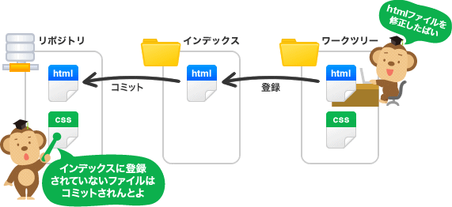

Git周辺知識
- Git
- 分散型バージョン管理システムの一つ。
- gitHub
-
ソースコード管理システム。gitがついてる。その他にもgitがあるサービスはいろいろある。
gitの仕組みを利用して世界中の人が作品を保存公開できるようにしたサービス。
backlogにもgit機能ついている。 - sourceTree
- gitを画面で観ながら操作するGUI形式のソフト。 sourceTreeガイド
忘れやすいGit用語集
- リポジトリ
- ファイルやディレクトリ状態を記録する場所。
管理したいディレクトリをリポジトリの管理下に置くことで変更履歴が格納される。 - ワークツリー
- Git管理下に置かれた、実際に作業しているディレクトリのこと。
- インデックス
- リポジトリとワークツリーとの間に存在する。リポジトリにコミットする準備をする場所のこと。sourceTreeだとステージした状態。 
- 統合ブランチ
- リリースがいつでも可能なようにしておくためのブランチ。そのため安定した状態を保つことが大事。通常masterブランチを統合ブランチにする。